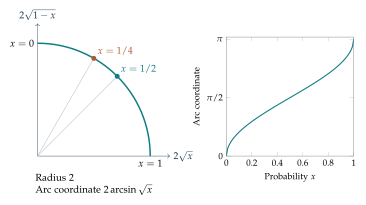

Raising a probability from \(0.49\) to \(0.50\) and raising one from \(0.01\) to \(0.02\) both add one percentage point. The second change doubles the chance of a rare outcome. If probabilities describe measurements or competing models, equal coordinate changes need not represent equally substantial statistical changes.
The last comparison depended on which distribution was treated as the reference. This time we want a distance that gives the same answer in either direction. Ordinary differences of coordinates are easy to calculate, but they do not reflect the relative size of a change near a rare outcome. Let's look for coordinates in which the geometry is easier to see.
What an ordinary coordinate distance misses
A Euclidean displacement from \(p\) to \(q\) is \(\delta=q-p\), with squared length \(\sum_i\delta_i^2\). This treats a coordinate change independently of the probability already present in that coordinate.
Sampling provides a reason to look for a different scale. For a binary probability \(x\) and \(N\) independent observations, Chapter 4 gave the standard deviation of the empirical proportion: \[\sqrt{\frac{x(1-x)}N}.\] A small change \(\delta\) in \(x\) can be compared with that fluctuation scale. Its magnitude in these units is \[\frac{\sqrt N\,|\delta|}{\sqrt{x(1-x)}}.\] The denominator depends on the state. The same numerical change can be large relative to one sampling scale and small relative to another.
This motivates a statistical geometry. It does not supply an automatic hypothesis test or a complete measure of practical importance. We are building a distance between probability models, with their sampling behavior as one source of interpretation.
Lengths, angles, and the formulas we need
For a vector \(v=(v_1,\ldots,v_k)\), its Euclidean length is \[\|v\|=\sqrt{\sum_i v_i^2}.\] The dot product of \(v\) and \(w\) is \(v\cdot w=\sum_i v_iw_i\). For nonzero vectors, the angle \(\alpha\) between them satisfies \[\cos\alpha=\frac{v\cdot w}{\|v\|\|w\|}.\]
We measure angles in radians. A full turn is \(2\pi\), a right angle is \(\pi/2\), and an arc subtending angle \(\alpha\) on a circle of radius \(R\) has length \(R\alpha\). A calculator’s \(\arccos\) function returns the angle having a specified cosine. Use radian mode.
The sphere of radius two is the set of vectors with squared length four. For three coordinates this is an ordinary sphere in space. With more coordinates, the equation still defines the object and its dot products still make sense, even when a picture is unavailable.
Square roots turn normalization into a sphere equation
The probabilities already satisfy an equation: their sum is one. The sum of the squares of coordinates is the familiar equation for a sphere. Taking square roots is a way to turn the first equation into the second.
Map a probability vector to \[s(p)=(2\sqrt{p_1},\ldots,2\sqrt{p_k}).\] Its squared length is \[\|s(p)\|^2=\sum_i(2\sqrt{p_i})^2=4\sum_i p_i=4.\] Thus every distribution lies on the radius-two sphere after this transformation. All coordinates are nonnegative, so only that portion of the sphere is used.
The inverse transformation is equally explicit: \[p_i=\frac{s_i^2}{4}.\] A nonnegative sphere vector gives nonnegative probabilities summing to one. We have a new coordinate system for the same probability states.
For two labels the image is a quarter circle. For three labels it is an octant of a sphere. A pure distribution \((1,0,0)\) maps to \((2,0,0)\); the uniform distribution maps to \((2/\sqrt3,2/\sqrt3,2/\sqrt3)\).
The factor two is a normalization choice. It makes the local squared length agree with the categorical Fisher quadratic form derived below. A sphere of radius one would give distances half as large, so the radius belongs in the definition.
Overlap determines an exact statistical distance
The dot product of the two transformed vectors is \[s(p)\cdot s(q)=4\sum_i\sqrt{p_iq_i}.\] Define the square-root overlap, also called the Bhattacharyya coefficient, by \[B(p,q)=\sum_i\sqrt{p_iq_i}.\] Since both vectors have length two, their angle is \(\alpha=\arccos B(p,q)\).
Every term in the overlap is nonnegative. The Cauchy–Schwarz inequality gives \[B(p,q)^2\leq\left(\sum_i p_i\right)\left(\sum_i q_i\right)=1.\] One finite proof of the inequality is the sum-of-squares identity \[\left(\sum_i a_i^2\right)\left(\sum_i b_i^2\right) -\left(\sum_i a_ib_i\right)^2 =\sum_{i<j}(a_ib_j-a_jb_i)^2\geq0.\] Set \(a_i=\sqrt{p_i}\) and \(b_i=\sqrt{q_i}\). Thus \(0\leq B\leq1\) and \(0\leq\alpha\leq\pi/2\).
Define the categorical Fisher–Rao distance \[\boxed{d_{\mathrm{FR}}(p,q)=2\arccos B(p,q).}\] It is the length of the shorter great-circle arc between the transformed points. The distance lies between zero and \(\pi\).
Example. A distance that includes a boundary state
Take \(p=(1,0)\) and \(q=(1/4,3/4)\). The overlap is \(\sqrt{1/4}=1/2\). Their angle is \(\pi/3\), so their distance is \(2\pi/3\).
Both distributions are allowed even though one coordinate of \(p\) is zero. The reverse KL comparison \(D(q\|p)\) is infinite, but the spherical distance is finite.
Identical tables have overlap one and distance zero. Tables with disjoint supports have overlap zero and distance \(\pi\). The construction treats the two arguments symmetrically.
Example. A three-category comparison carried out numerically
Compare \(p=(1/2,1/3,1/6)\) with the uniform table \(u=(1/3,1/3,1/3)\). Compute the overlap one coordinate at a time: \[B(p,u)=\sqrt{\frac16}+\frac13+\sqrt{\frac1{18}} \approx0.977284.\] Its inverse cosine is about \(0.21355\) radians, giving distance about \(0.4271\). The method is the same for three labels as for two: multiply corresponding probabilities, take square roots, add, and apply inverse cosine.
A frequent arithmetic mistake is to take the square root after summing the products. That would calculate \(\sqrt{\sum_i p_iq_i}\), a different expression. Another is to feed a degree-valued angle into a radian arc formula. Recording the overlap and the angle separately makes both mistakes easier to diagnose.
Computer arithmetic can produce an overlap such as \(1.0000000000000002\) for identical distributions. Before applying inverse cosine, clamp such a rounded value to the interval \([0,1]\). A substantial value outside that interval indicates a different issue, such as unnormalized inputs; clamping should not conceal it. For very close binary distributions, the arcsine-coordinate formula is often convenient because it directly compares their arc coordinates.
Why this construction gives a distance
On a sphere, the shorter great-circle arc is a shortest route between two points. Our transformed probability vectors are never antipodal, since all their coordinates are nonnegative. The arc joining them stays in the nonnegative part of the sphere as well, so it represents valid probability distributions all along the way.
A route from \(p\) to \(q\) followed by one from \(q\) to \(r\) is a possible route from \(p\) to \(r\). It cannot be shorter than the shortest direct spherical route. Therefore \[d_{\mathrm{FR}}(p,r)\leq d_{\mathrm{FR}}(p,q)+d_{\mathrm{FR}}(q,r).\] This is the triangle inequality. Symmetry follows from symmetry of overlap. Zero distance forces identical square-root coordinates, hence identical probabilities.
Together, these properties justify calling the formula a distance. They also let us compare a route through several probability states with the distance between its endpoints.
Binary probabilities have a particularly useful coordinate
For \(p=(x,1-x)\), introduce \[\phi=\arcsin\sqrt{x},\qquad 0\leq\phi\leq\pi/2.\] The function \(\arcsin\) returns the angle whose sine is the given value. Because \(\sin^2\phi+\cos^2\phi=1\), the sphere coordinates become \[s(p)=(2\sin\phi,2\cos\phi).\] Moving along the quarter circle is now measured by the angle \(\phi\). The arc coordinate from \(x=0\) is \(2\phi\), giving \[\boxed{d_{\mathrm{FR}}(x,y) =2|\arcsin\sqrt y-\arcsin\sqrt x|.}\]
| Probability \(x\) | Angle \(\phi\) | Arc coordinate \(2\phi\) |
|---|---|---|
| 0 | 0 | 0 |
| \(1/4\) | \(\pi/6\) | \(\pi/3\) |
| \(1/2\) | \(\pi/4\) | \(\pi/2\) |
| \(3/4\) | \(\pi/3\) | \(2\pi/3\) |
| 1 | \(\pi/2\) | \(\pi\) |
The equal probability steps \(0\to1/4\) and \(1/4\to1/2\) have distances \(\pi/3\) and \(\pi/6\). The first covers twice as much arc.

This coordinate also makes ordered binary path lengths easy to calculate. If \(x_0\leq x_1\leq\cdots\leq x_m\), the angle differences all have the same sign. Adding the arc distances telescopes to the distance from \(x_0\) to \(x_m\).
Local Fisher length emerges from a finite identity
We can see the local geometry without differentiating a square root. Let \(q=p+\delta\), where \(\sum_i\delta_i=0\). Rationalizing the difference gives the exact identity \[2\sqrt{p_i+\delta_i}-2\sqrt{p_i} =\frac{2\delta_i}{\sqrt{p_i+\delta_i}+\sqrt{p_i}}.\] Consequently the squared chord length is \[\|s(q)-s(p)\|^2 =4\sum_i\frac{\delta_i^2} {(\sqrt{p_i+\delta_i}+\sqrt{p_i})^2}.\]
If every \(p_i\) is positive and the changes are small relative to those probabilities, the denominator is close to \(4p_i\). This gives the approximation \[\boxed{g_p(\delta,\delta)=\sum_i\frac{\delta_i^2}{p_i}.}\] This state-dependent quadratic form is the Fisher metric for categorical distributions. Its square root is a local length estimate.
Why does a chord approximate an arc? If their angular separation is \(\alpha\), the chord has length \(4\sin(\alpha/2)\) and the arc has length \(2\alpha\). For a small angle, these are close. Elementary inequalities \(\sin t\leq t\leq\tan t\) bound their ratio between one and \(1/\cos t\), with \(t=\alpha/2\). The bound approaches one as the angle becomes small.
Thus the local form has two transparent approximations behind it: replacing the square-root denominators by their nearby starting values, and replacing a short arc by its chord. Neither replacement is needed in the exact distance formula.
For a binary step \((x,1-x)\to(x+\delta,1-x-\delta)\), \[g_x(\delta,\delta)=\frac{\delta^2}{x}+\frac{\delta^2}{1-x} =\frac{\delta^2}{x(1-x)}.\] Its square root is \(|\delta|/\sqrt{x(1-x)}\), precisely the sampling scale considered at the start of the chapter, apart from the factor \(\sqrt N\).
The phrase small relative to the probabilities can be made quantitative. Suppose \[|\delta_i|\leq\varepsilon p_i\quad\text{for every }i,\qquad 0<\varepsilon<1.\] Then \(p_i+\delta_i\) lies between \((1-\varepsilon)p_i\) and \((1+\varepsilon)p_i\). Bounding each square-root denominator in the exact chord identity gives \[\frac{4}{(1+\sqrt{1+\varepsilon})^2}g_p(\delta,\delta) \leq\|s(q)-s(p)\|^2 \leq\frac{4}{(1+\sqrt{1-\varepsilon})^2}g_p(\delta,\delta).\] Both factors approach one when \(\varepsilon\) becomes small. This is a finite error bound supporting the local approximation. It also shows why a tiny absolute change in a nearly absent category can be problematic: its relative change may still be large.
The form \(g_p\) is positive for every nonzero displacement at a positive state, because it adds nonnegative squares with positive denominators. It scales quadratically: \(g_p(c\delta,c\delta)=c^2g_p(\delta,\delta)\). Its square root therefore scales like a length. These elementary properties explain the term quadratic form without requiring a background in differential geometry.
The allowable displacements also satisfy \(\sum_i\delta_i=0\). A proposed direction that changes every probability upward cannot be a direction through normalized distributions. The local geometry describes this sum-zero space of changes at the current state.
Comparing exact and approximate quantities
Relative entropy has the same local quadratic scale: \[2D(p+\delta\|p)\approx g_p(\delta,\delta)\] for sufficiently small changes at a positive starting state. This is a local approximation, rather than a formula for arbitrary finite steps.
Example. A short step at the center
Take \(p=(1/2,1/2)\) and \(q=(0.55,0.45)\). Then \(\delta=(0.05,-0.05)\) and \[g_p(\delta,\delta)=0.01,\qquad \sqrt{g_p}=0.1.\] The exact distance is about \(0.100167\), and \(2D(q\|p)\approx0.0100167\). The local and exact quantities are close, with the expected squared-length relationship.
A small absolute step need not be small relative to a rare probability. For \(x:0.01\to0.02\), the local estimate is about \(0.100504\) while the exact distance is about \(0.083459\). The probability doubled, so replacing the denominator by its starting value is relatively crude. For \(x:0.49\to0.50\), the local estimate is about \(0.020004\) and the exact distance about \(0.020001\).
At \(p_i=0\), an inward step makes \(\delta_i^2/p_i\) unavailable. This is a limitation of the local expression at the boundary. The exact square-root geometry still gives a finite answer. We therefore use exact distances for boundary edges.
Chords and Hellinger distance provide another scale
Expanding the squared chord directly gives \[\|s(p)-s(q)\|^2=8(1-B(p,q)).\] The Hellinger distance, with the convention used here, is \[h(p,q)=\sqrt{1-B(p,q)} =\frac1{\sqrt2}\sqrt{\sum_i(\sqrt{p_i}-\sqrt{q_i})^2}.\] It is the Euclidean distance in square-root coordinates scaled by \(1/\sqrt2\). It therefore also satisfies the triangle inequality.
The radius-two chord length is \(2\sqrt2\,h\). Hellinger distance and Fisher–Rao distance increase together as overlap decreases, but their numerical scales differ. For two distinct pure states, \(h=1\) while \(d_{\mathrm{FR}}=\pi\).
Independent repeated observations supply a further interpretation of overlap. For product distributions \(p^{\otimes N}\) and \(q^{\otimes N}\), finite multiplication and summation give \[B(p^{\otimes N},q^{\otimes N})=B(p,q)^N.\] For two observations, expand \(\sum_{i,j}\sqrt{p_ip_jq_iq_j}\) and factor it into two identical sums. Repeating gives the formula. If \(p\ne q\), the overlap is less than one and its repeated-observation value shrinks with \(N\). Repeated data can separate models that overlap strongly in a single observation.
The sampling interpretation can now be read more carefully. At \(x=1/2\) and \(N=100\), the standard deviation of an empirical binary proportion is \(0.05\). A change of \(0.01\) is one fifth of that scale. At \(x=0.01\), the corresponding standard deviation is about \(0.00995\), so the same absolute change is about one full fluctuation scale.
This comparison concerns distributions of repeated samples. A single sample can vary for many reasons, and a formal statistical test must specify a null model and its sampling distribution. The geometry identifies a useful state-dependent scale; it does not replace those modeling decisions.
Distances and uncertainties should also be kept separate. Two pure distributions have equal entropy zero but maximal spherical separation \(\pi\). Two distributions near uniform may both have large entropy and still differ from one another. Entropy describes uncertainty within one table. A distance describes separation between two tables. The sphere construction adds a relational measurement that one scalar entropy cannot provide.
Giving the lattice statistical edge lengths
Return to \(\mathcal P_N\), where an edge represents a one-token transfer. Give each edge the exact weight \[\ell(p,q)=d_{\mathrm{FR}}(p,q).\] The probability lattice is now a weighted graph. One token can represent different statistical lengths depending on the starting composition.
For an interior edge, a local estimate is \(\sqrt{\sum_i(q_i-p_i)^2/p_i}\). This estimate depends on which endpoint is treated as the start, so it is not an exact symmetric edge distance. The spherical formula is symmetric and works at boundaries.
For \(x:1/4\to1/2\), the exact distance is \(\pi/6\approx0.523599\). The local estimate at \(1/4\) is about \(0.577350\). Splitting through \(3/8\) gives local estimates about \(0.288675\) and \(0.258199\), totaling \(0.546874\), closer to the exact value. The exact arc lengths already add to \(\pi/6\) at every such ordered subdivision.
Use the Fisher-distance view of the operator explorer to compare ordinary coordinate changes with statistical distances. In the weekly demonstration, move points on the sphere and compare an arc with its chord. Where do the two measurements differ most?
Exercises
- Map \((1,0,0)\), \((1/2,1/2,0)\), and \((1/3,1/3,1/3)\) to radius-two sphere coordinates. Check their lengths.
- Calculate overlap and Fisher–Rao distance between \((1,0)\) and \((1/4,3/4)\).
- Calculate the two distances for \(x:0\to1/4\) and \(x:1/4\to1/2\). Explain the unequal results.
- For \(p=(1/2,1/2)\) and \(q=(0.55,0.45)\), calculate the local squared length, local length, exact distance, and \(2D(q\|p)\).
- Derive the binary Fisher form \(\delta^2/[x(1-x)]\).
- Compare the local estimate for \(x:1/4\to1/2\) with the sum of estimates through \(3/8\). Use each step’s starting state.
- Explain why the local formula cannot be used for a move from \((0,1)\) to \((1/4,3/4)\). Calculate the exact distance.
- Prove the chord identity \(\|s(p)-s(q)\|^2=8(1-B)\).
- Find Hellinger and Fisher–Rao distances between two distinct pure states. Compare them with the directed KL values.
- Prove the repeated-observation overlap identity for two observations and then for general \(N\).
- Explain why local estimates from opposite endpoints of a finite edge may differ. Give numerical values for one binary edge.
- On the binary \(N=4\) lattice, add all four exact edge lengths from zero to one. Explain why the answer agrees with the endpoint distance.
Selected exercise solutions
1. The vectors are \((2,0,0)\), \((\sqrt2,\sqrt2,0)\), and \((2/\sqrt3,2/\sqrt3,2/\sqrt3)\). Each has squared length four.
2. The overlap is \(1/2\) and the distance is \(2\pi/3\).
4. The squared local length is \(0.01\), its square root is \(0.1\), the exact distance is about \(0.100167\), and twice the divergence is about \(0.0100167\).
6. The single estimate is \(0.25/\sqrt{(1/4)(3/4)}\approx0.577350\). The two estimates total \(0.125/\sqrt{(1/4)(3/4)}+0.125/\sqrt{(3/8)(5/8)}\approx0.546874\).
7. The term for the first coordinate divides by zero. The exact overlap is \(\sqrt3/2\), giving angle \(\pi/6\) and distance \(\pi/3\).
12. The arc coordinates are \(0,\pi/3,\pi/2,2\pi/3,\pi\). Their successive positive differences sum to \(\pi\).